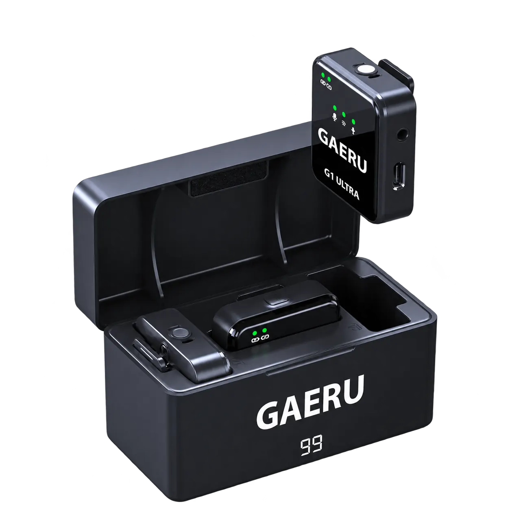

Điện thoại. Máy ảnh. Máy tính.
Đối chiếu dây cáp và đầu chuyển đi kèm để kết nối với cổng Type-C, Lightning hoặc ngõ mic 3.5mm trên máy ảnh. Luôn thu thử một đoạn ngắn khi chuyển đổi giữa các thiết bị.
GAERU G1 ULTRA · MICRO KHÔNG DÂY ĐA THIẾT BỊ
Bộ micro không dây hai bộ phát kèm hộp sạc dành cho người sáng tạo làm việc trên nhiều thiết bị. Kết nối linh hoạt với điện thoại, máy ảnh và máy tính, hỗ trợ kiểm âm trực tiếp và đưa nhạc nền qua Bluetooth.

CHỦ ĐỘNG ĐƯỜNG ÂM THANH
Dù bạn quay bằng điện thoại, máy ảnh rời hay ghi hình trên máy tính, G1 ULTRA cung cấp các chuẩn kết nối và kiểm âm để bạn nghe thử và cân chỉnh trước khi bấm máy.
Đối chiếu dây cáp và đầu chuyển đi kèm để kết nối với cổng Type-C, Lightning hoặc ngõ mic 3.5mm trên máy ảnh. Luôn thu thử một đoạn ngắn khi chuyển đổi giữa các thiết bị.
Hỗ trợ tai nghe kiểm âm tại đầu thu để phát hiện sớm hiện tượng cọ áo, tiếng gió hoặc mức độ lợi (gain) quá lớn, kết hợp nghe lại file thực tế trên máy quay.
Hai micro cài áo hoạt động đồng thời cho phỏng vấn và đối thoại. Hộp sạc giúp cất gọn toàn bộ bộ phát, đầu thu và theo dõi dung lượng pin qua màn hình số.
Cho phép cấp nhạc nền qua Bluetooth vào hệ thống theo hướng dẫn sử dụng, thuận tiện cho các buổi livestream ca hát, chia sẻ hoặc dẫn chương trình trực tiếp.

QUY TRÌNH CHUẨN BỊ
Với hệ thống hỗ trợ nhiều cổng kết nối và chế độ âm thanh, việc kiểm tra nhanh trước buổi quay giúp bạn tránh sai sót nguồn thu.
Đối chiếu phụ kiện thực tế trong hộp sạc và chọn đúng cáp dẫn cho thiết bị ghi hình bạn sử dụng hôm nay.

GAERU TRONG CUỘC SỐNG CỦA BẠN
Dễ dàng chuyển đổi đầu thu từ điện thoại sang máy ảnh Mirrorless/DSLR khi nâng cấp thiết bị quay.
Thu đồng thời hai giọng nói với khả năng kiểm âm trực tiếp để đảm bảo cân bằng âm lượng giữa người dẫn và khách mời.
Kết hợp giọng nói rõ nét cùng nhạc nền Bluetooth và kiểm soát mức thu xuyên suốt buổi phát sóng.
CHI TIẾT THIẾT BỊ
| Cấu hình hệ thống | 2 bộ phát (micro cài áo) + 1 đầu thu + Hộp sạc hiển thị pin |
|---|---|
| Thiết bị tương thích | Điện thoại, máy ảnh, máy tính (qua dây cáp / đầu chuyển phù hợp của bộ) |
| Tính năng âm thanh | Hỗ trợ giảm ồn, kiểm âm qua tai nghe, nhạc nền Bluetooth và chế độ hiệu ứng |
| Cổng sạc | Type-C (sử dụng nguồn sạc đúng thông số khuyến nghị trên thiết bị) |
| Giá niêm yết | 2.100.000 ₫ (phiên bản tiêu chuẩn tại cửa hàng GAERU) |
| Phụ kiện đi kèm | Đối chiếu danh sách dây cáp, đầu chuyển và bông lọc theo phiên bản trên đơn hàng |
GIẢI ĐÁP NHANH
Mỗi thiết bị ghi hình sử dụng chuẩn đầu vào khác nhau (cổng kỹ thuật số Type-C/Lightning trên điện thoại hoặc ngõ âm thanh 3.5mm trên máy ảnh). Bạn cần dùng đúng dây cáp hoặc đầu chuyển tương ứng trong bộ và kiểm tra thiết lập nguồn thu âm ngoài của ứng dụng/máy ảnh.
Tín hiệu nghe ở cổng kiểm âm trên đầu thu cho biết micro đã truyền về đầu thu thành công. Để tiếng đi vào video, hãy kiểm tra cáp nối từ đầu thu sang điện thoại/máy ảnh đã cắm hết nấc chưa và ứng dụng quay đã chọn nguồn micro rời hay chưa.
Bluetooth trên G1 ULTRA được dùng để cấp nhạc nền từ thiết bị phát phụ vào hệ thống theo hướng dẫn. Đường truyền giọng nói chính giữa micro và đầu thu vẫn sử dụng kết nối không dây riêng của bộ.
Kiểm tra nút chuyển chế độ và đèn chỉ báo trên thiết bị theo hướng dẫn sử dụng G1 ULTRA để tắt chế độ vang trước khi ghi hình nội dung trò chuyện thông thường.
CÂU CHUYỆN TIẾP THEO BẮT ĐẦU TỪ BẠN